I absolutely LOVE visual art!!! I have been learning to draw since I was little.There are so many things you can make, and I think it's very satisfying. My favorite art media is sketching, but I also really love sculpting, beadwork, knitting, crocheting, and other various crafts that I find!
I prefer sketching realistic things, and sometimes I create drawings while looking at a picture and sometimes following along with a video. Below are some of my drawings:
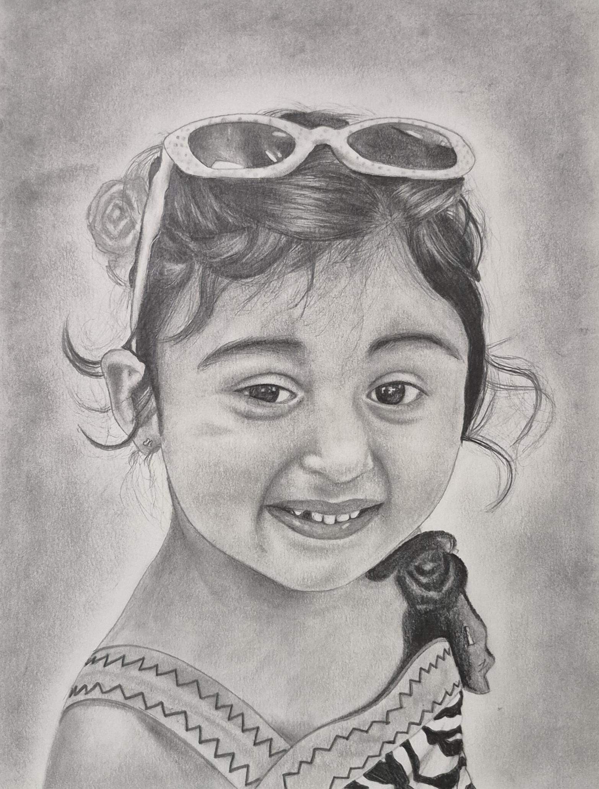
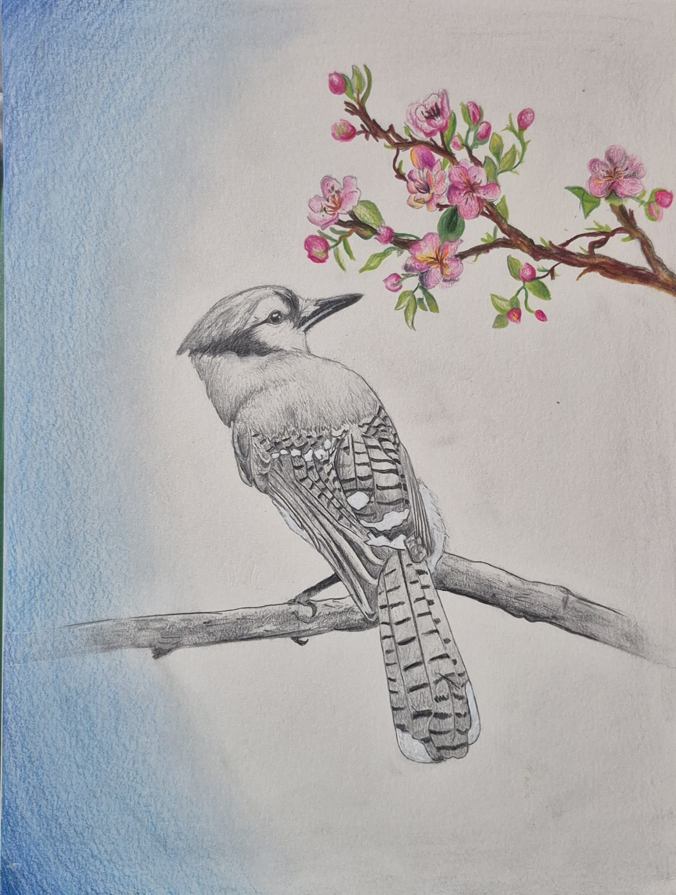
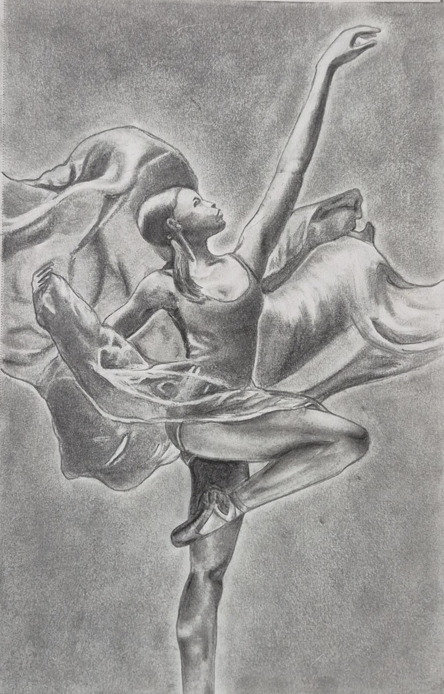
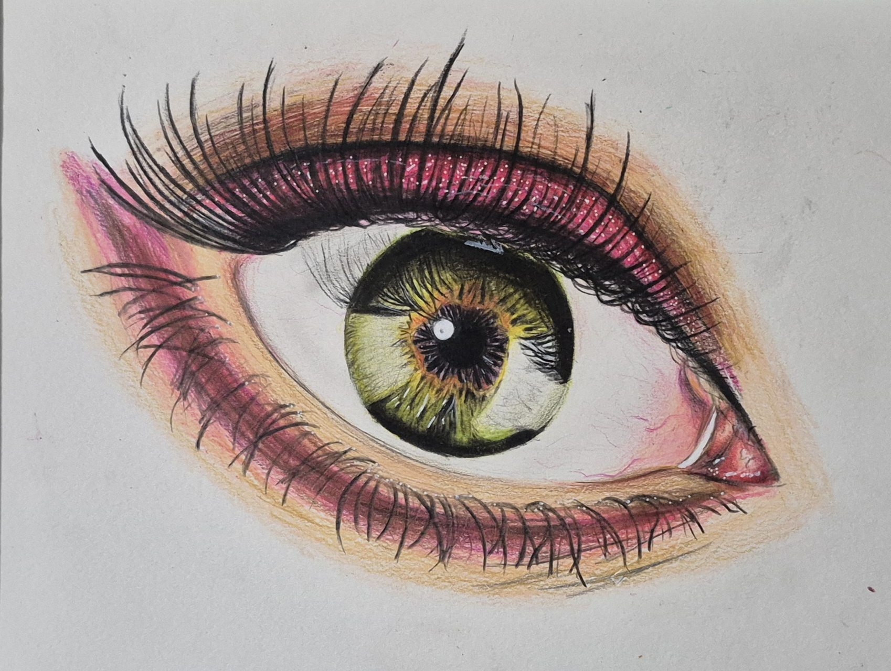
Click to watch the tutorial!When I was about 11 or 12, I got obsessed with making miniature clay creations! Below are some of them:
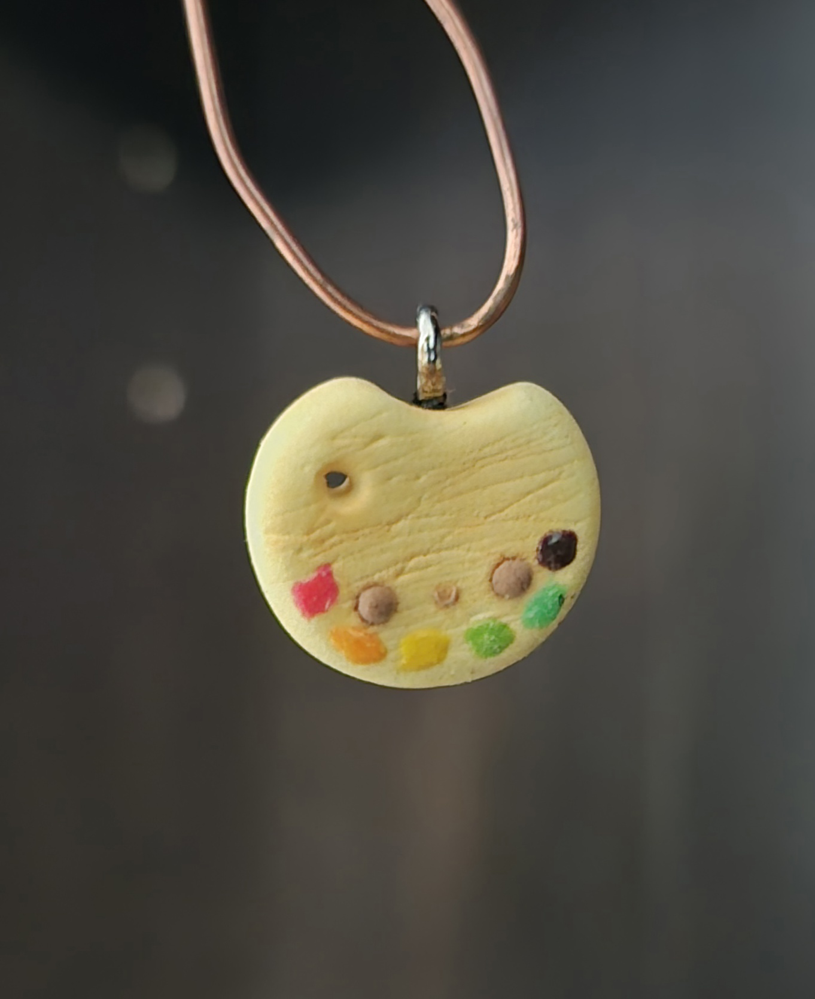
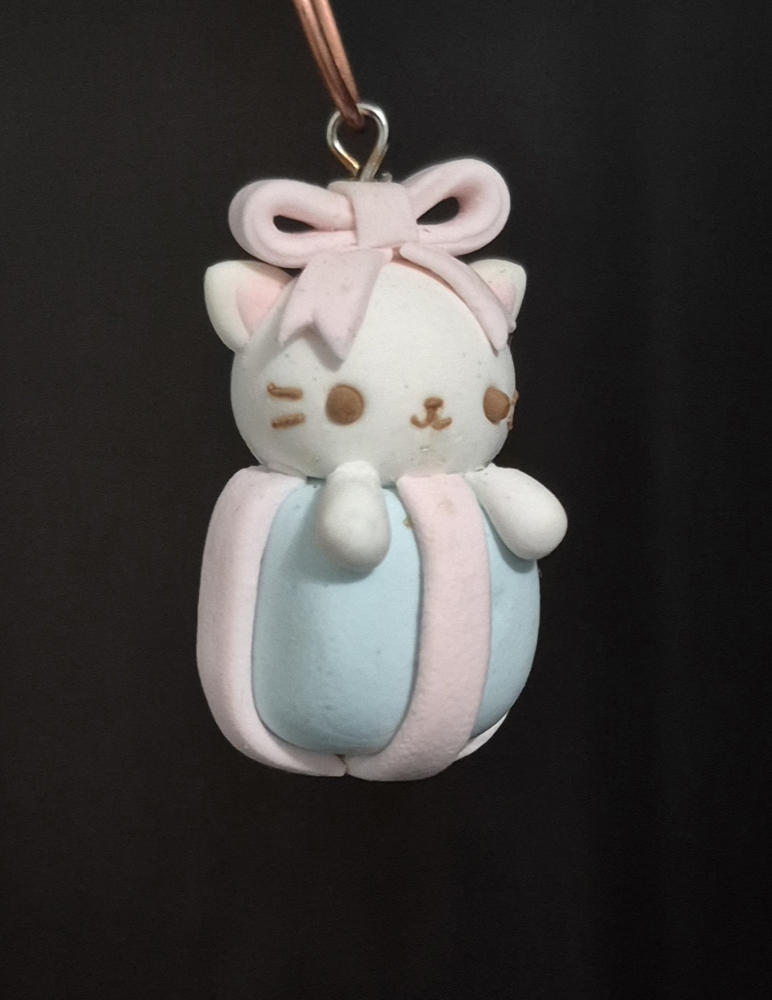
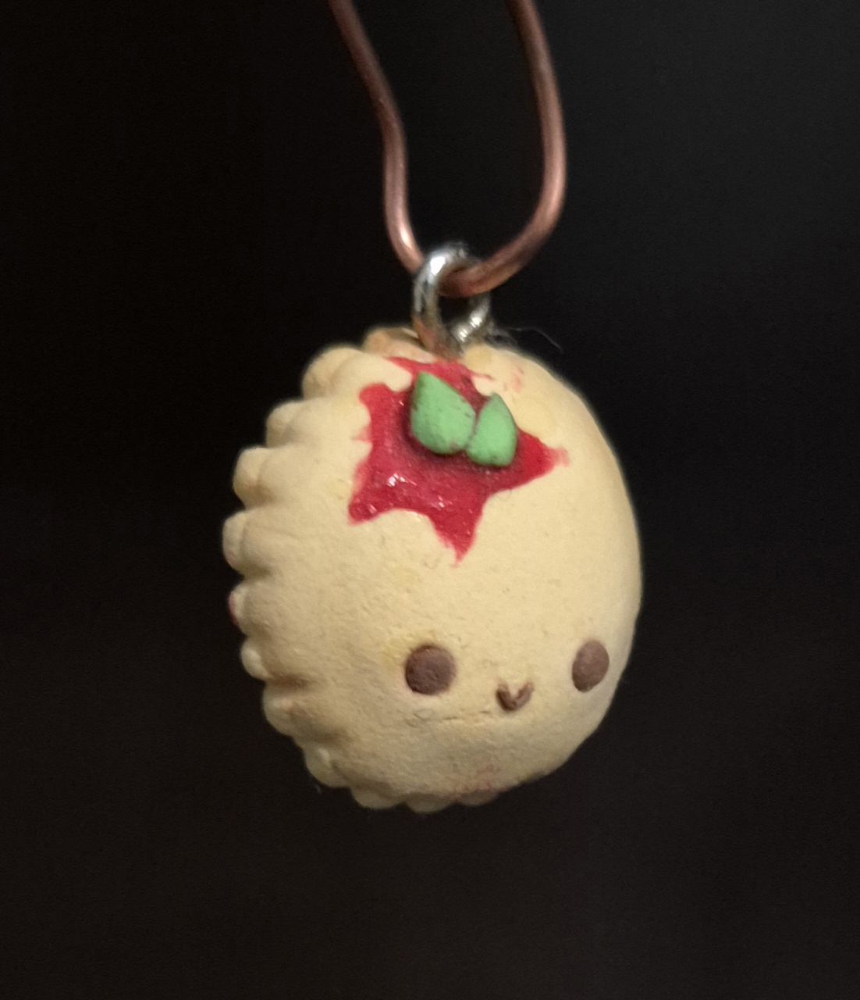
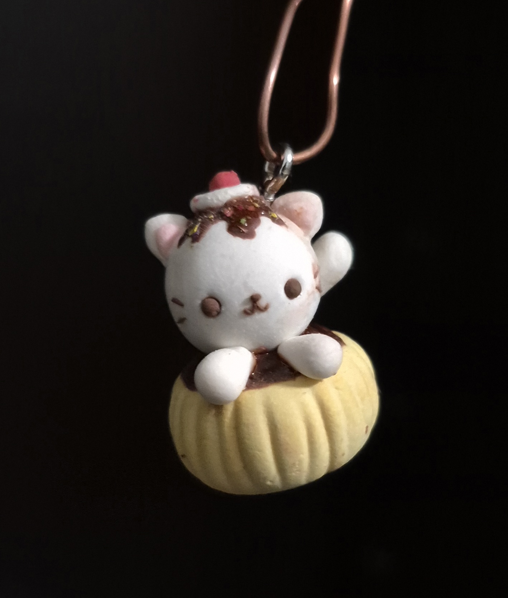
Since the last year or so, I have been really interesting in working with resin. I have made bookmarks, pens, a coaster, keychains, and other trinkets for my parents, teachers, and friends. The display below shows some resin artwork:
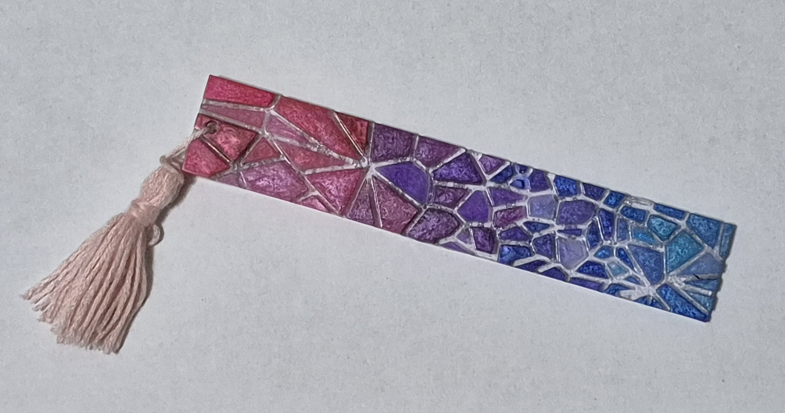
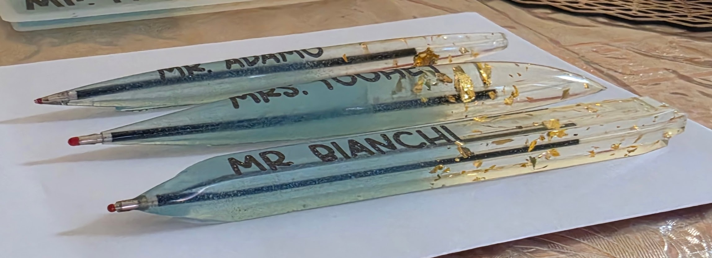
Currently, I am trying to make an upcycled jeans purse even though I don't know how to use a sewing machine! 🤣 Here are some pics of my progress:
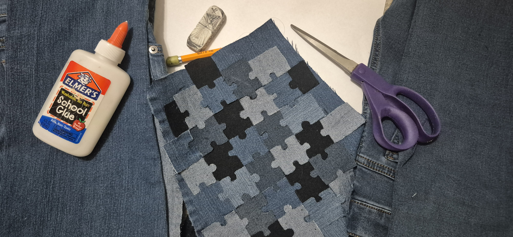
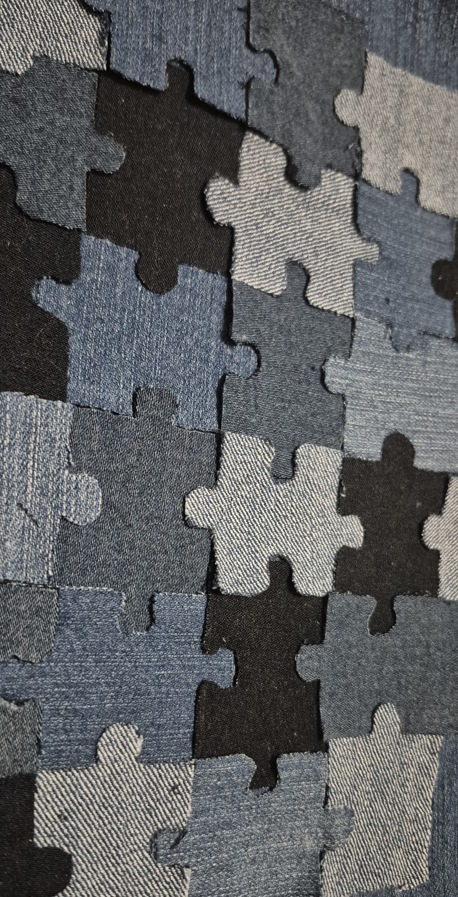
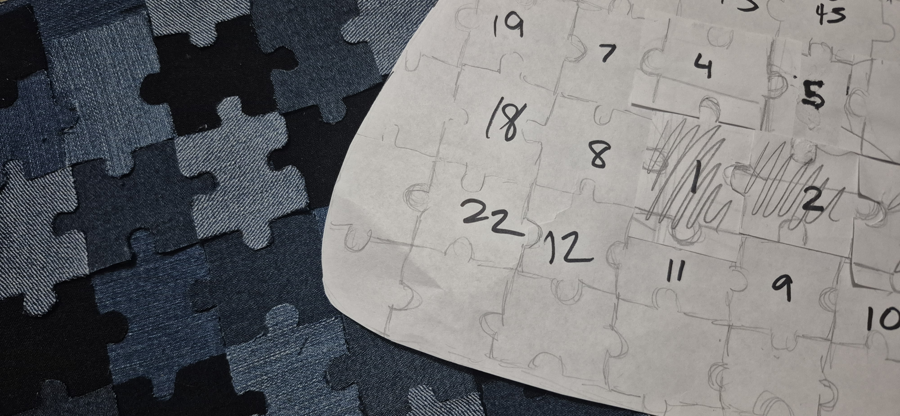